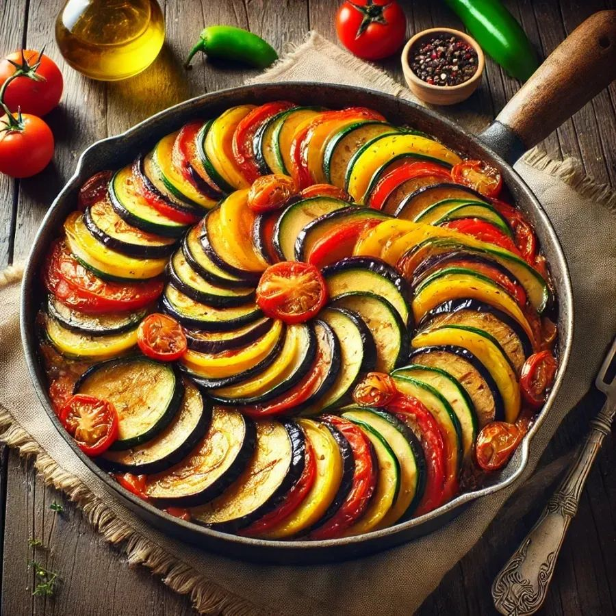
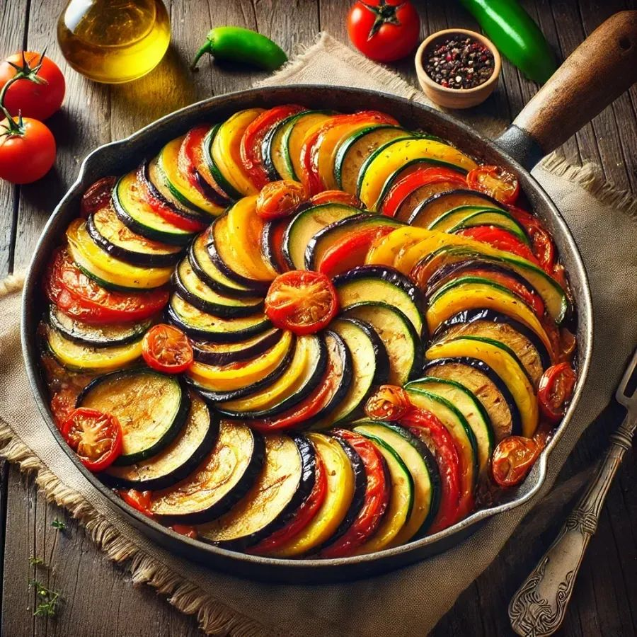
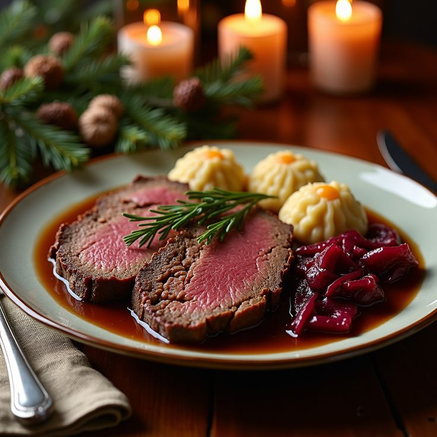
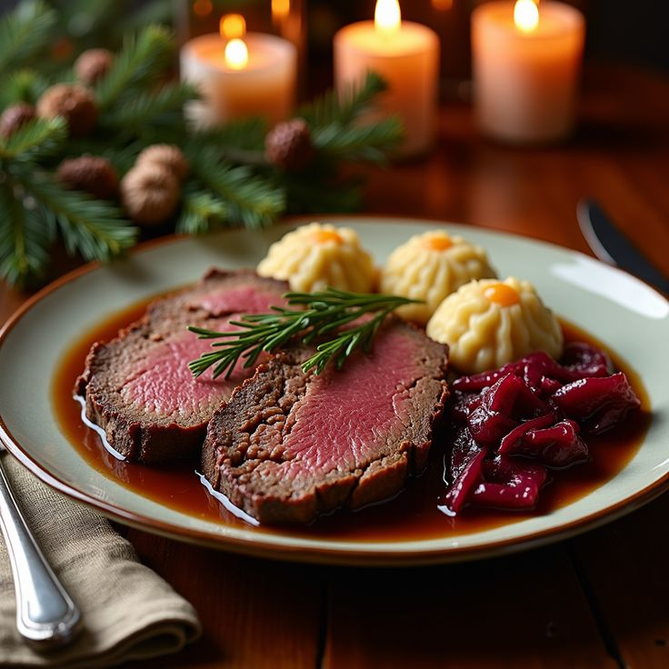
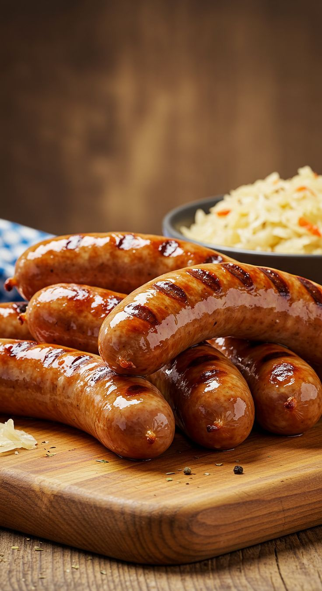
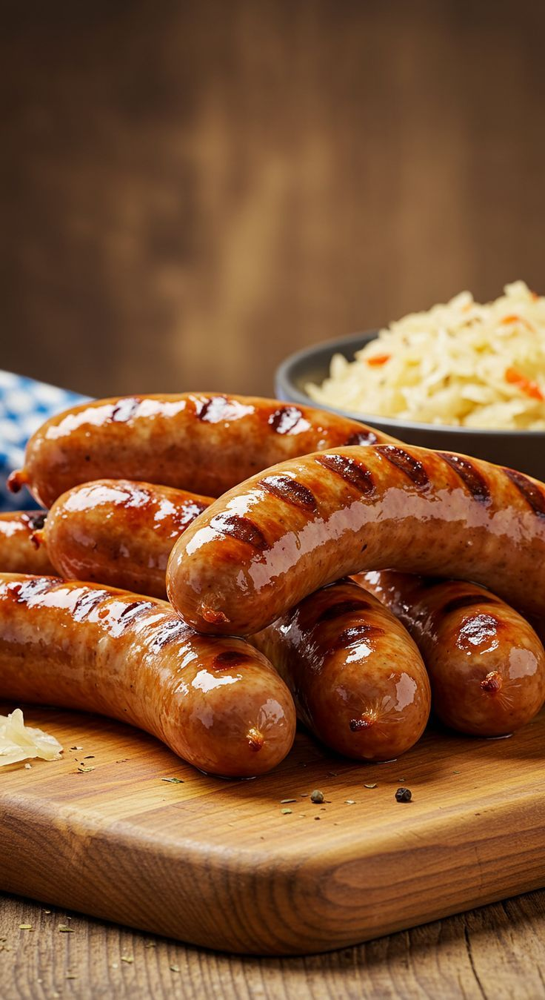
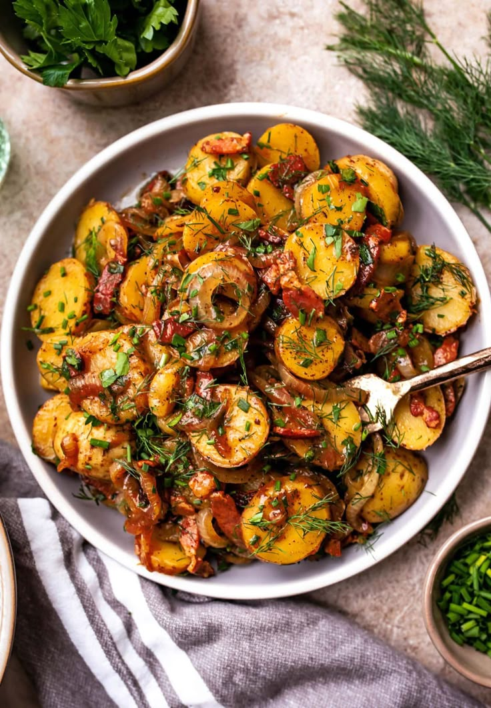
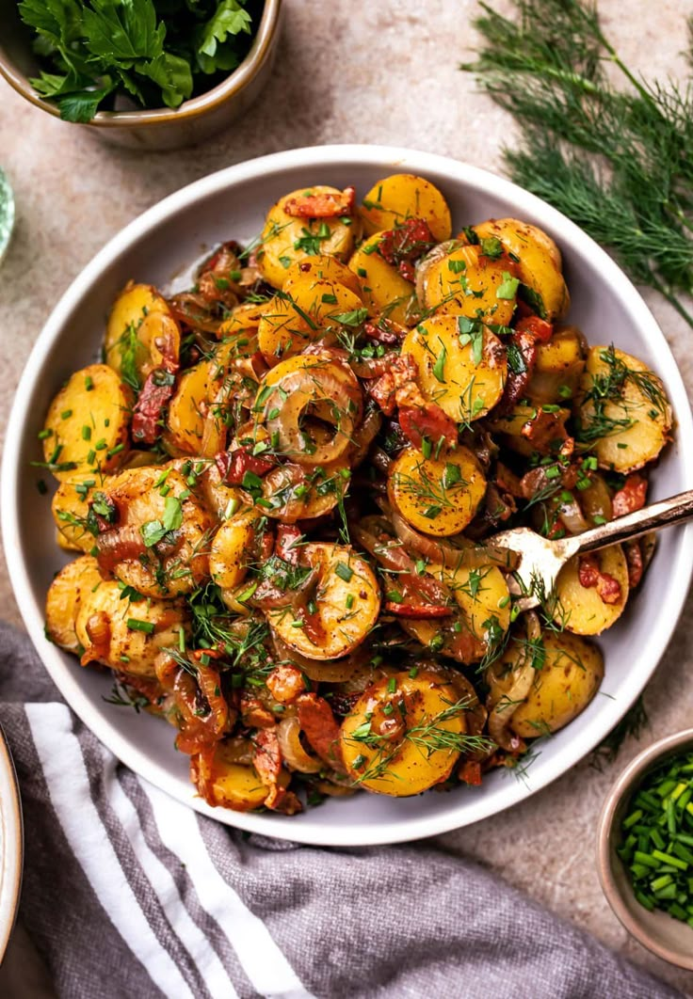
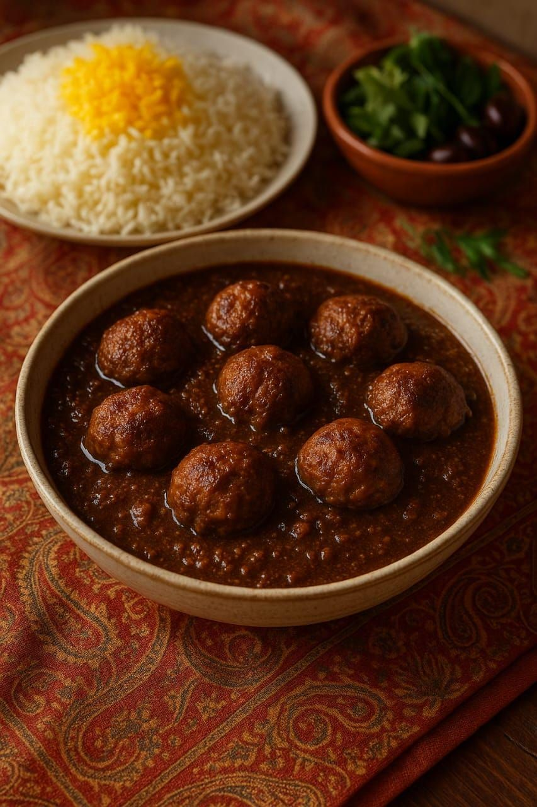
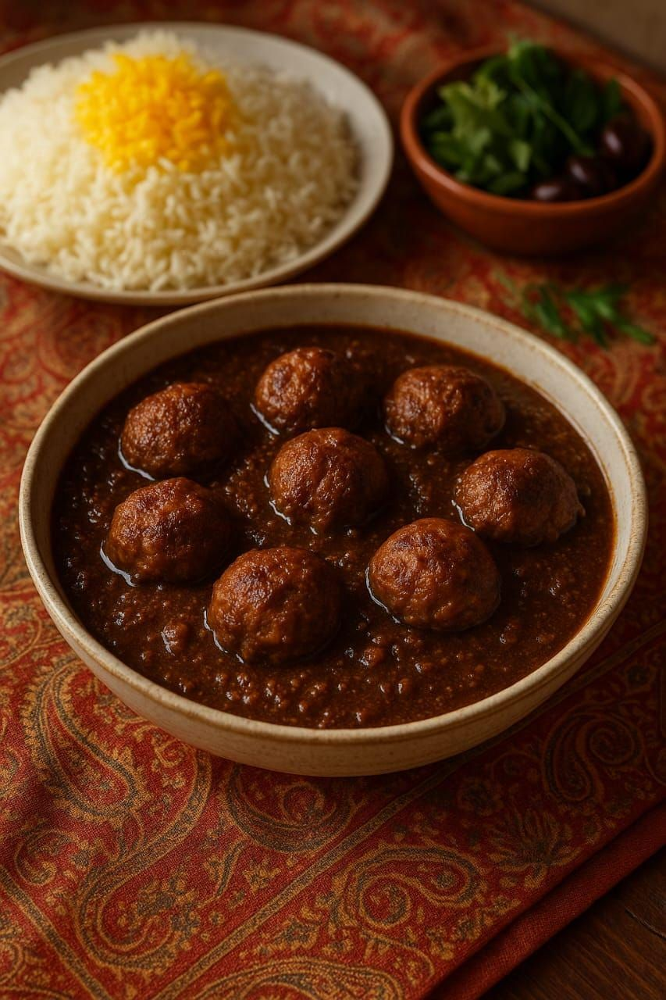

French Foods


1.Croissant
Why is it?The croissant is a classic French pastry made from layers
of buttery dough that are carefully folded and rolled to
create a flaky texture. It is shaped into a crescent and baked
until golden brown, giving it a light, crisp exterior and a soft,airy interior.
Click for recipe🥐
 

2.Ratatouille
Why is it?Ratatouille is a traditional French vegetable dish that
originated in the Provence region. It is made by thinly slicing
vegetables such as eggplant, zucchini, tomatoes, and bell
peppers, then arranging them in layers or circles before.
cooking them slowly in olive oil with herbs like thyme and basil.
Click for recipe🥖


3.Tarte aux Fruits
Why is it?RThe fruit tart, or “tarte aux fruits,” is a delightful French
dessert consisting of a crisp pastry crust filled with a
smooth vanilla custard, known as crème pâtissière. On top
of the custard, fresh fruits such as strawberries, kiwi,
blueberries, and peaches are artistically arranged to create a vibrant and colorful display.
Click for recipe🍰German Foods

 

1.Sauerbraten
Why is it?Sauerbraten is a traditional German pot roast.
It is usually made from beef marinated for several days.
The marinade contains vinegar, water, spices, and vegetables.
This slow-cooked dish is tender and flavorful.
It is often served with red cabbage and potato dumplings.
It’s considered one of Germany’s national dishes.
Click for recipe🥩
 

2.Bratwurst
Why is it?Bratwurst is a popular German sausage.
It is made from pork, beef, or veal.
Typically grilled or pan-fried, it’s served in a bun with mustard.
It can also be served with sauerkraut and potatoes.
Bratwurst is common at festivals and street markets in Germany.
Click for recipe🌭 

3.Kartoffelsalat
Why is it?Kartoffelsalat means potato salad.
It is a staple side dish in Germany.
There are many regional variations.
Common ingredients include boiled potatoes, vinegar, oil, and onions.
Sometimes bacon or mustard is added.
The salad is served warm or cold depending on the region.
Click for recipe🥔Iranian Foods


1.Ghormeh Sabzi
Why is it?Ghormeh Sabzi is a traditional Persian herb stew made with a mix of fresh herbs, kidney beans, and lamb or beef.
It is slowly simmered with dried limes to create a unique sour and aromatic flavor.
This dish is typically served over steamed Persian rice.
Click for recipeGhormeh Sabzi🍀
 

2.Fesenjan
Why is it?Fesenjan is a rich and flavorful Persian stew made with ground walnuts and pomegranate molasses, giving it a sweet and tangy taste.
It is usually cooked with chicken or duck and served over rice.
This dish is popular during special occasions and gatherings.
Click for recipe🍯


3.Zereshk Polo
Why is it?Zereshk Polo is a Persian rice dish mixed with barberries, saffron, and sometimes almonds or pistachios.
It is often served with chicken and has a beautiful combination of sweet and tangy flavors.
The vibrant colors make it a favorite for festive meals.
Click for recipe🍚Japanese Foods
1.Sushi
Why is it?Sushi is a traditional Japanese dish consisting of vinegared rice combined with various ingredients such as seafood, vegetables, and occasionally tropical fruits.
Common types include nigiri, maki rolls, and temaki.
Sushi is often served with soy sauce, wasabi, and pickled ginger.
Click for recipe🍣2.Ramen
Why is it?Ramen is a Japanese noodle soup consisting of Chinese-style wheat noodles served in a meat- or occasionally fish-based broth.
Common toppings include sliced pork (chashu), nori (seaweed), menma (bamboo shoots), and green onions.
The dish has become popular worldwide, with many regional variations.
Click for recipe🍜3.Tempura
Why is it?Tempura is a Japanese dish of battered and deep-fried seafood or vegetables.
The batter is typically made from cold water, flour, and egg.
Tempura is known for its light, crispy texture and is often served with a dipping sauce called tentsuyu.
Click for recipe🍤